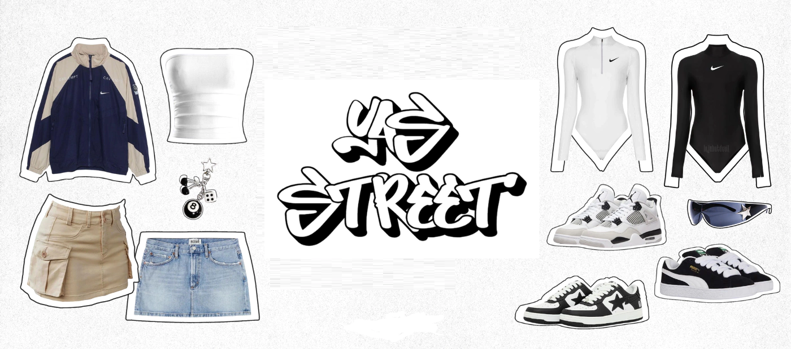

Yas street
A Yastreet é uma marca de moda especializada em streetwear feminino, dedicada a proporcionar autenticidade, atitude e estilo para mulheres que se expressam através do que vestem. Nosso propósito vai além de simplesmente oferecer roupas; buscamos criar uma identidade única, que une conforto, design contemporâneo e referências urbanas em peças que traduzem personalidade e liberdade de expressão.
Nosso site
Nosso site foi desenvolvido para oferecer uma experiência de compra prática, segura e inspiradora, reunindo coleções exclusivas que acompanham as tendências do streetwear mundial sem abrir mão da originalidade. Valorizamos a individualidade de cada cliente e acreditamos que a moda é uma poderosa forma de comunicação.
Nosso objetivo
Nosso objetivo é construir um comunidade em torno da cultura urbana, promovendo não apenas estilo, mas também confiança, representatividade e força. Nossa missão é empoderar mulheres a se vestirem como realmente se sinta bem!